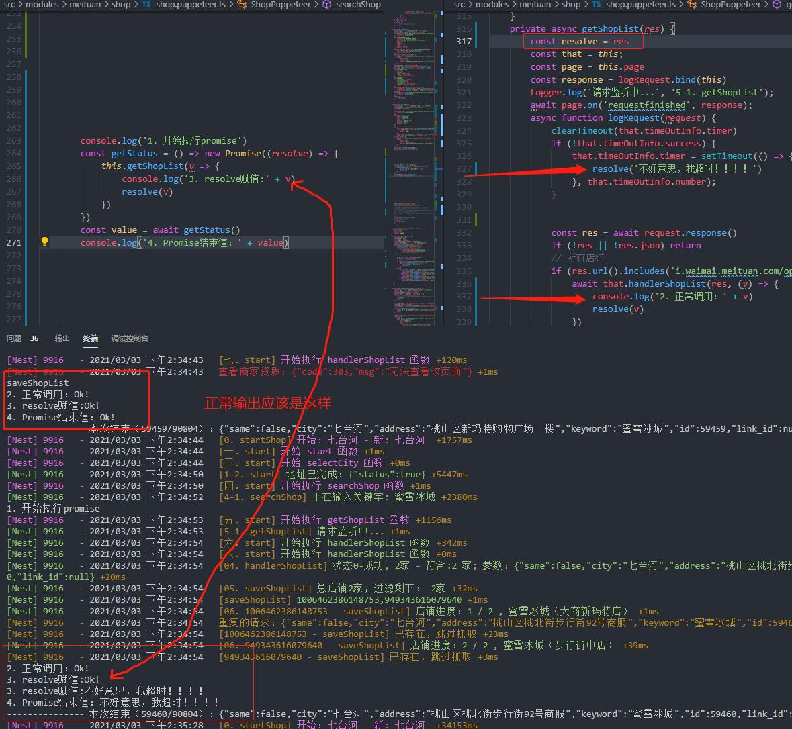
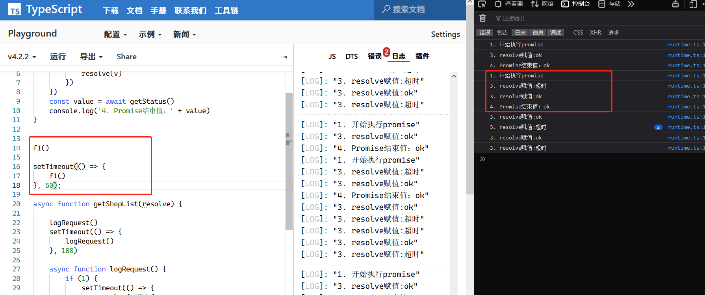
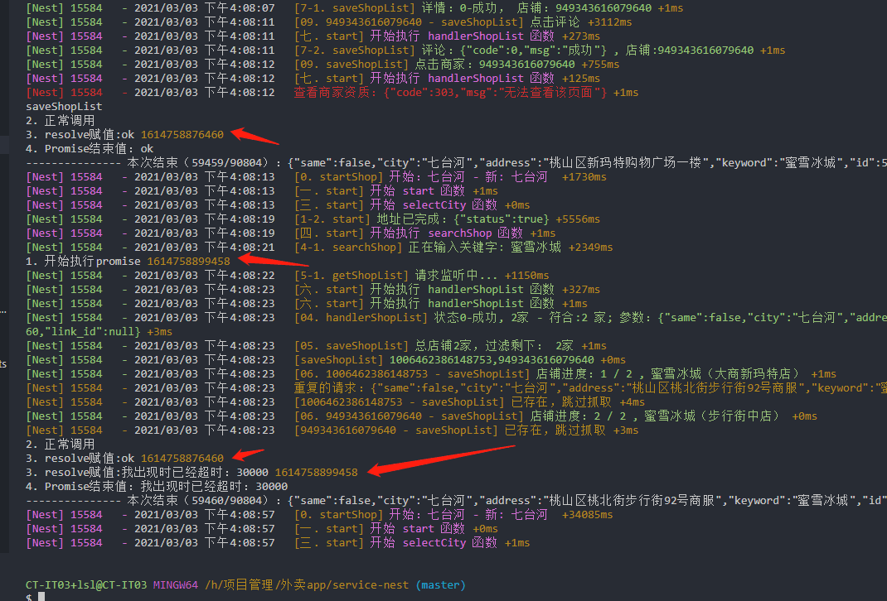

promise reolve 两次后才结束（伪）
问题
2021/3/3 遇到群友提出的一个问题

我一开始以为很简单，但后来一想这个log不对，不管怎么样的流程都不会是这个输出
聊天记录
崮生 (见我吹水请禁言 15:40:28

，你那里连续打印两次赋值然后再打印的结束 很奇怪
，你那里连续打印两次赋值然后再打印的结束 很奇怪
我这里模拟的流程怎么弄也不可能连续两次赋值然后才结束
老司机带带我，我 15:42:01
按理说 Promise 得到resolve后 就往下执行， 但是我的 resolve 需要2次。
这次我可以了， 也不知道原因， 只能不了了之。
崮生 (见我吹水请禁言 15:48:53

我有一种猜想能得到你这个结果
搞不明白你这奇怪的输出
老司机带带我，我 15:51:22
意思是我上次的定时器没清理掉》？
老司机带带我，我 15:51:43
应该不是， 因为我的定时器需要100秒才会触发
崮生 (见我吹水请禁言 15:51:44
有可能，你 getShopList 内的逻辑比较混乱
老司机带带我，我 15:52:30
已经显示
显示了ok
老司机带带我，我 15:52:41
然后第二次才显示了 超时。
崮生 (见我吹水请禁言 15:52:56
不一定是定时器，你 getShopList 内的代码使用 await 可能会将一个 log延时到了第二次才打印
崮生 (见我吹水请禁言 15:53:15
你拉长 searchShop 的调用时间试试
崮生 (见我吹水请禁言 15:55:26
就是让 searchShop 的每次调用间隔久一点，排除一下第一次调用的log混入第二次的可能
崮生 (见我吹水请禁言 15:56:25
或者你给每次调用加一个 id ，然后在log内输出id，看连续的log是不是同一次调用的
老司机带带我，我 15:58:40
调用getShopList 时？
崮生 (见我吹水请禁言 15:58:57
searchshop
老司机带带我，我 15:59:25
searchshop 只调用一次。
老司机带带我，我 16:08:43
好像是上一次的。
老司机带带我，我 16:09:18

老司机带带我，我 16:09:20
破案了
崮生 (见我吹水请禁言 16:10:09
果然不是同一次的
崮生 (见我吹水请禁言 16:10:28
我想来想去只想到 log 被延时了
崮生 (见我吹水请禁言 16:12:32
老司机带带我，我
searchshop 只调用一次。
你这句话害的我又想了好一会
老司机带带我，我 16:12:52
额，我没理解对。
老司机带带我，我 16:13:21
上次循环的结果没清理干净。
崮生 (见我吹水请禁言 16:13:50
找到问题了就好，编程就怕编程玄学
崮生 (见我吹水请禁言 16:13:57
变成玄学